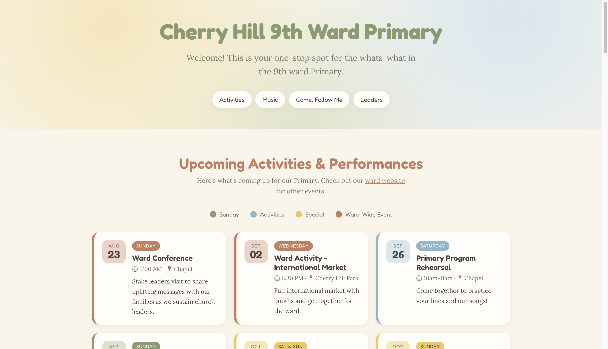
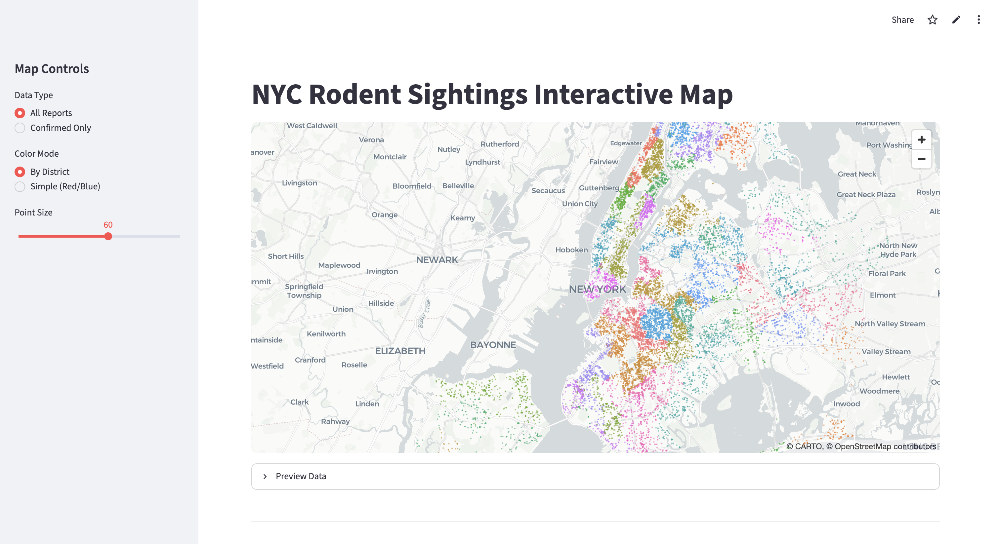
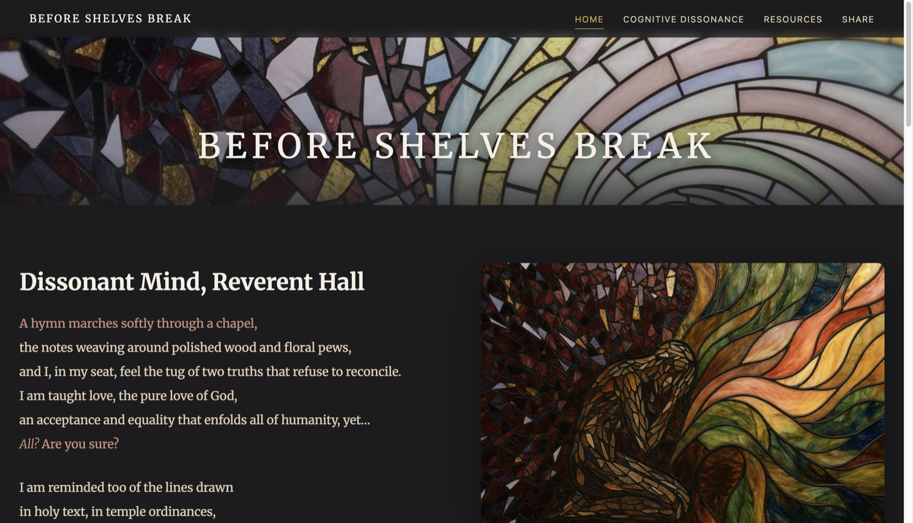
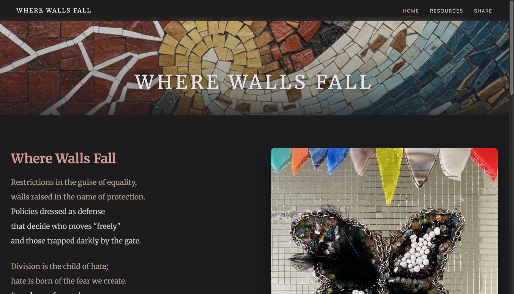
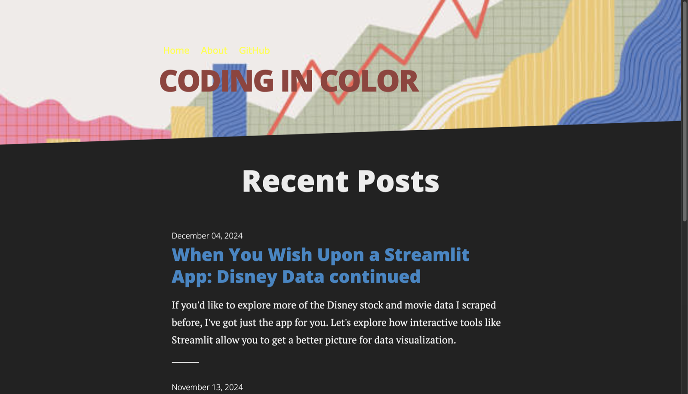
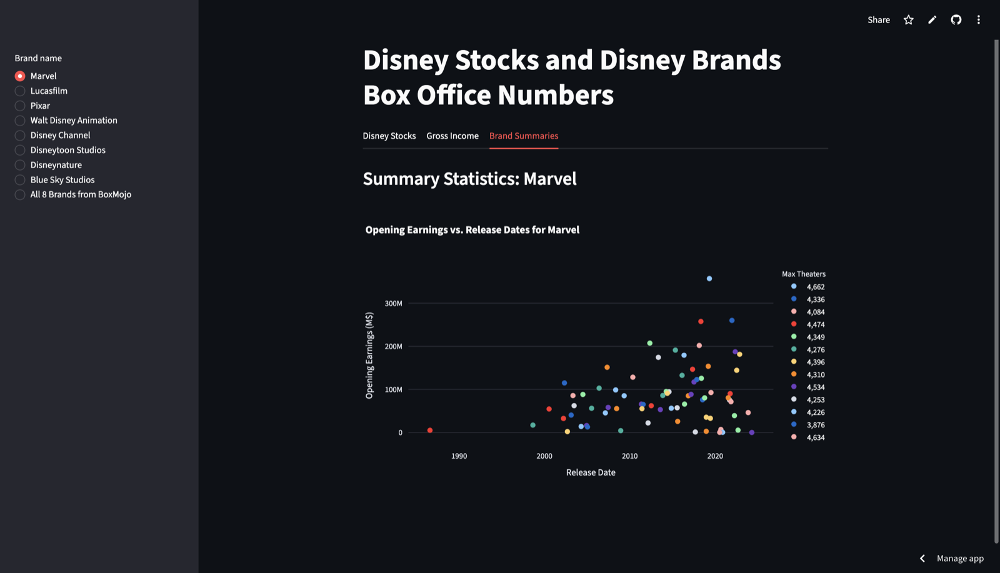

Crop Water Stress Prediction
A spatial linear model predicting crop water-stress index from 20 bisquare-basis features; 10-fold cross-validation cut prediction error ~40% versus a non-spatial baseline.
RspmodelSpatial StatsCross-Validation
My personal portfolio: a statistician specializing in data science, a hobbyist creating music and fiber arts, and a citizen committed to community and equity. Welcome to my corner of the web!
Applied statistics and data-science work: spatial models, forecasting, consulting analyses, and interactive Python apps. Each card links to the full analysis, report, or live app.
A spatial linear model predicting crop water-stress index from 20 bisquare-basis features; 10-fold cross-validation cut prediction error ~40% versus a non-spatial baseline.
A public-health study of heat-related illness in Houston, using a conditional autoregressive (CAR) model to map relative risk and inform prevention — presented as a research poster.
An interactive map plotting NYC rodent-sighting reports across the city, with district color-coding, confirmed-only filtering, and a correlation analysis.
An interactive app pairing Disney's box-office history with its stock performance — built from web-scraped data with live, filterable charts.
A forecasting study that critiques a company's original linear model and rebuilds it with proper diagnostics to project future growth. Co-authored with Andrea Reed.
A consulting-style simulation project modeling how household income relates to spending on eating out — with assumption checks, cross-validation, and hypothesis testing — delivered as a client report.
A biostatistics study of macular-degeneration data — from exploratory analysis through modeling of progression and risk factors — summarized in a written report.
A presentation exploring data-driven correlates of happiness — from exploratory analysis to the story told in the slides.
A statistical look at five-year post-graduation outcomes, pairing the analysis with the source articles behind it.
Sites I've designed, built, and/or written: from data apps to poetry and community resources.

A community resource hub for a congregation's children's program — activities, singing-time song lists, study guides, and leader contacts. Static HTML & CSS.

An interactive map plotting NYC rodent-sighting reports across the city, with district color-coding, confirmed-only filtering, and a correlation analysis. Built in Python with Streamlit.

A personal essay & mosaic-art site on cognitive dissonance — holding faith alongside questions of gender and racial justice within religious institutions.

An educational site pairing poetry and mixed-media art to examine systemic racism in U.S. history — redlining, the Tulsa Massacre, segregation, and more.

A statistics & data-visualization blog exploring analysis in Python — Matplotlib, Streamlit, and web-scraping projects. Built with Jekyll on GitHub Pages.

An interactive data app pairing Disney's box-office history with its stock performance, using web-scraped data and live charts. Built in Python with Streamlit.
A vertical timeline of roles, key achievements, and skills.
Where I make things for the joy of it. Drop in your own images, excerpts, and audio in the placeholders below.
Placeholder — a short excerpt or link to a piece you've published.
Placeholder — a story or poem, with a teaser line and a read-more link.
Placeholder — an ongoing series or blog you write regularly.
Placeholder — a recording or composition of yours.
Placeholder — a live performance or cover you'd like to feature.
Placeholder — piano, guitar, or another instrument you play.
Placeholder — a finished garment or work-in-progress photo.
Placeholder — a blanket, wall hanging, or textile piece.
Placeholder — hand-stitched or naturally-dyed work.
Giving back is a throughline in my life. Here's where I invest my time outside of work.
Placeholder — describe your role, the community you serve, and the responsibilities you carry.
Placeholder — the youth program you help run, activities you lead, and the impact on the kids you serve.
Placeholder — food drives, tutoring, fundraising, or any cause you regularly give your time to.
Placeholder — a project you started or helped lead that made your neighborhood a little better.